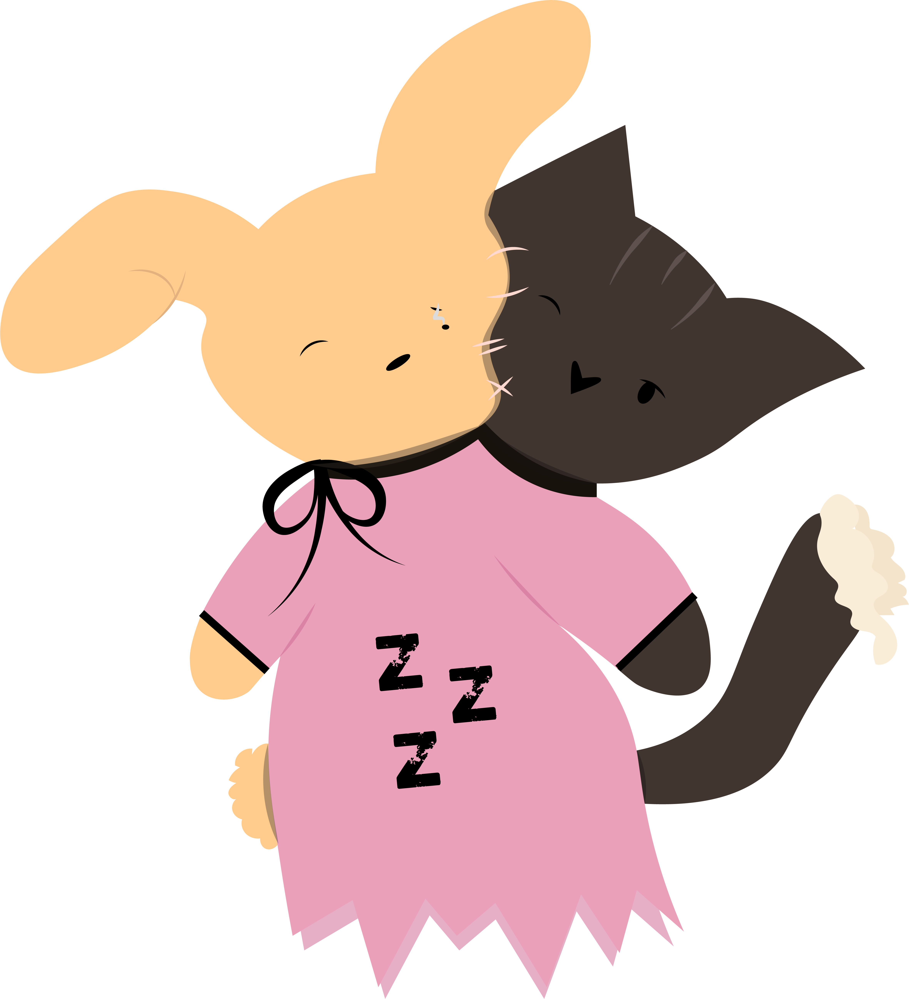
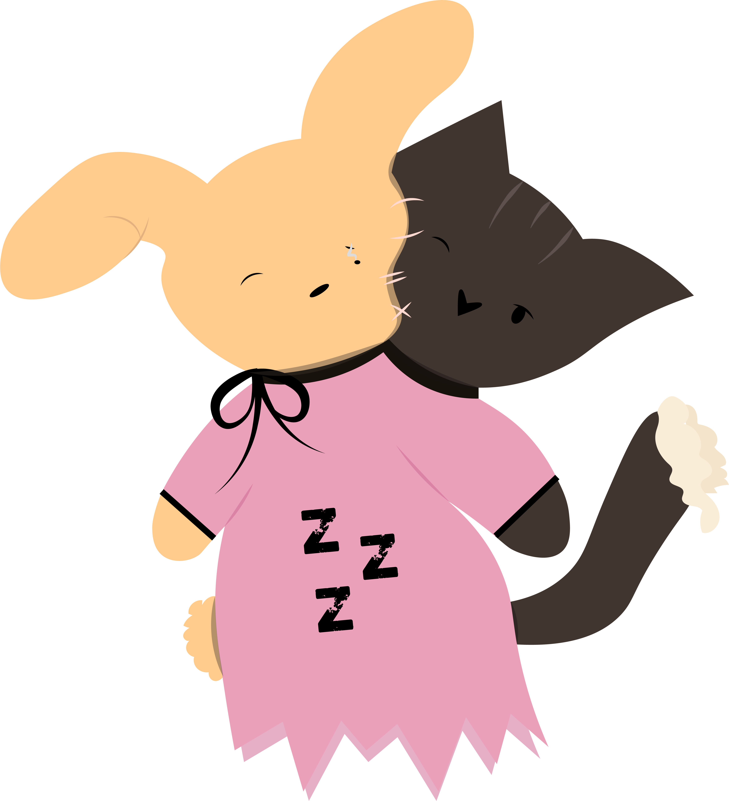

Angelya, la muñeca de porcelana con un ojo roto y grietas en su rostro, llevaba consigo el peso de ser olvidada. Con su vestido púrpura lleno de parches y encajes desgastados, decidió no rendirse. Sabía que su primer hogar aún estaba allá afuera, esperándola.
Una pequeña cajita sorpresa se convirtió en el indicador de que debía comenzar su búsqueda. Dentro de la cajita, un payasito de cuerda, con una sonrisa, le dio las pistas para seguir su camino.
El trayecto no sería fácil. Pelear tanto había roto a los juguetes que alguna vez fueron amigos. Ahora eran fragmentos llenos de ira y dolor. Angelya, con sus hábiles manos de porcelana, entendió que debía encontrar la forma de sanarlos antes de dejarlos atrás.
La lluvia comenzó a caer, y cada gota le recordaba eso que tanto había olvidado: su primer hogar. ¿Lograré llegar?, pensó con nostalgia. Pero no estaba sola. Pronto encontró a una mariposa de alas frágiles, que parecía perdida en su propia juventud. Se posó en el hombro de Angelya, convirtiéndose en su primera compañera.
Más adelante, halló un llavero oxidado, una pieza rota de algo que alguna vez fue. Al sostenerlo, comprendió que debía buscar el resto. Aunque sería difícil, su corazón le decía que valdría la pena.
El camino la llevó hasta un circo abandonado, donde un león viejo y cansado trataba de asustar, pero no podía ocultar su nobleza. "No te temo", le dijo Angelya, acercándose. Con paciencia, limpió sus melenas polvorientas y reparó su corazón roto.
Esa noche, junto a una fogata en las ruinas del circo, los juguetes reunidos calentaron sus tristes corazones mientras asaban marshmallows. "Aún hay esperanza", pensó Angelya, mientras miraba a su nueva familia.
Pero el ambiente no era completamente tranquilo. Un ratón alterado corría de un lado al otro, repitiendo sin cesar: "¡Tengo miedo de este circo!". Angelya, con dulzura, le aseguró que el miedo era pasajero y que juntos podían enfrentarlo.
A medida que avanzaban, encontraron una pequeña calabaza que no entendía que no era un juguete. Al saltar y saltar, casi se quiebra. "Debes tener cuidado contigo misma", le dijo Angelya, ayudándola a encontrar un lugar seguro.
La soledad de la noche envolvió al grupo. Angelya miró al cielo oscuro, sintiendo un leve temblor en su porcelana. No me gusta esto, pensó, pero la calidez de los demás la hizo mantenerse firme.
Pronto, llegó un momento de despedidas. Las lágrimas rodaron por su rostro mientras el león, finalmente encontrando un lugar al que podía llamar hogar, se despedía de Angelya. "Gracias por devolverme la esperanza", le dijo antes de desaparecer en la niebla.
Angelya continuó su viaje, más decidida que nunca. ¿Por qué las despedidas son tan tristes?, se preguntó, mientras sus pequeños pies de porcelana avanzaban hacia lo desconocido, buscando, siempre buscando, su verdadero hogar.